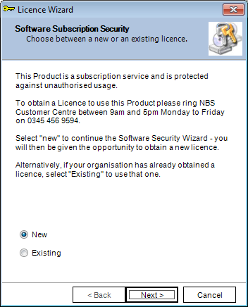
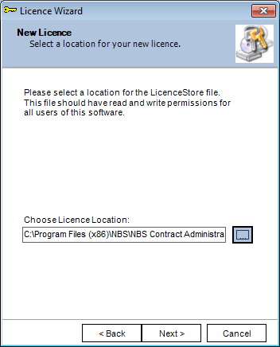
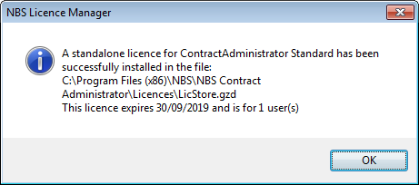

In order for the user to access NBS Contract Administrator, it must be licensed before it can be used.
The user is required to contact the NBS Customer Service team on 0345 456 9594 to obtain the licence.
The process to licence the software is fairly simple.
Once the software is installed successfully, start the software by double clicking on the NBS Contract Administrator icon on the desktop.
For more information on how to start the software, see Starting NBS Contract Administrator.
- Upon starting NBS Contract Administrator for the first time,
the licensing wizard will appear with the following dialog box:

- Select the New radio button and click Next
- the user will be presented with the following dialog box:

IMPORTANT: Once the licence has been created, it can no longer be moved. Moving the
licence file will render it unreadable and therefore the user can't use the software. Please
contact the NBS Software Support team if the user is in a situation like this.
Click on the browse button to select an alternative location for the licence
file or leave the default location then click on Next.
- Please call the NBS Customer Service team on 0345 456 9594 and quote
the licence request code shown in the Request Code text box.
The user will then be given a unique unlock code which they would enter in the Unlock Code box.
PLEASE NOTE: the request code is a unique code which will change if the user backs out
of the page to change the Path. It is recommended for all users to call the NBS Customer Service team to issue the unlocked code.
- Once the code is entered, click Unlock and then Finish. A confirmation message will appear similar to the one below:

- Click OK. The software will now open for normal use.
See also:
Renewing the Licence